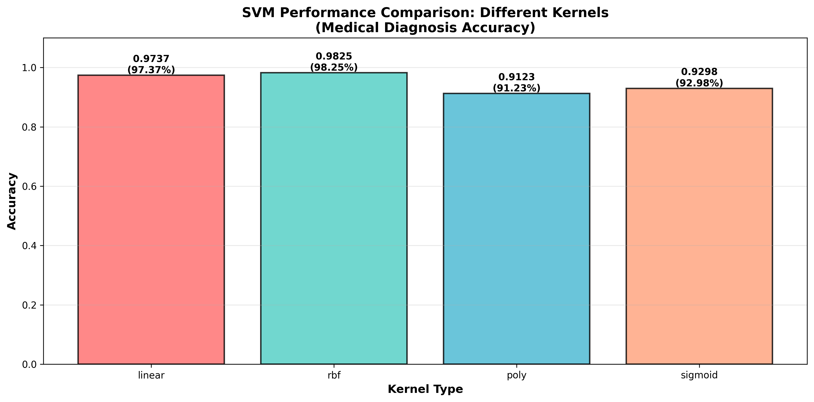
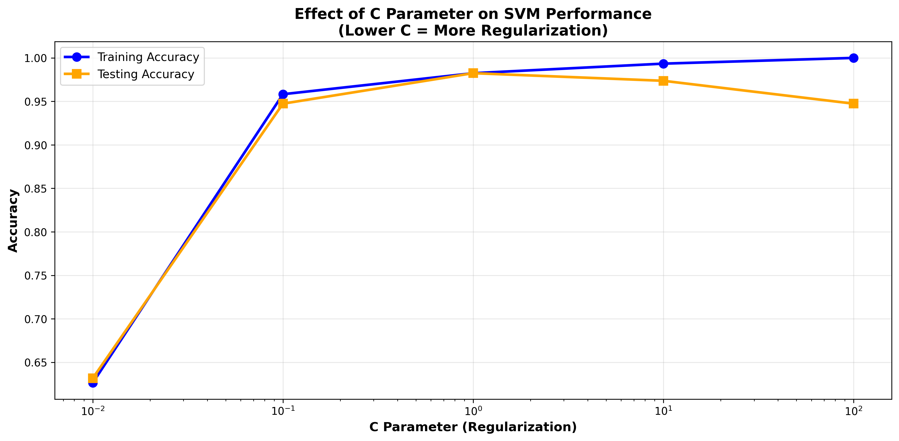
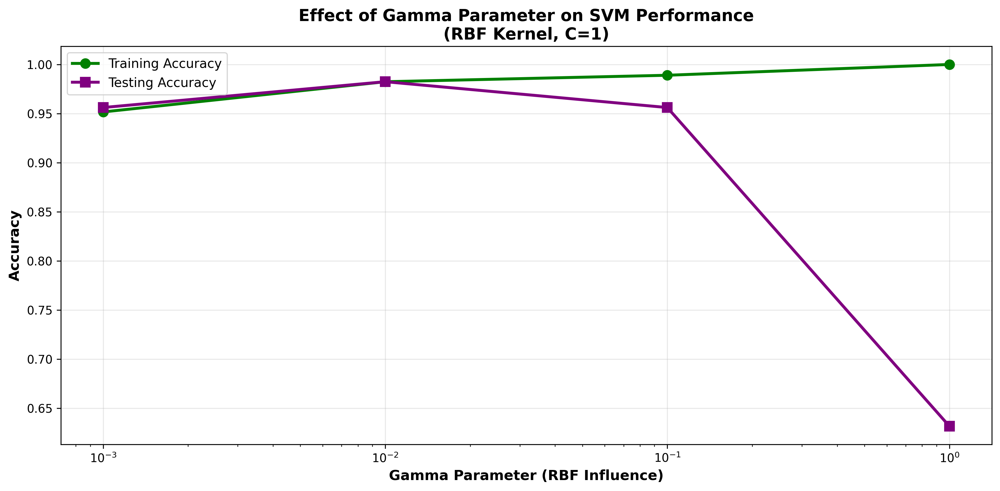

🔬 SVM Medical Diagnosis
Intelligent Insights & Performance Dashboard
📊 Performance Metrics Comparison
Interpretation: All metrics above 90% indicate excellent model performance. The balance between precision and recall is critical for medical diagnosis.
🎯 Kernel Performance Comparison
Best Kernel: LINEAR Accuracy: 97.37%
🎪 Confusion Matrix Breakdown
🏥 Medical Risk Assessment
False Negative Rate: 1.39%
LOW RISK
False Positive Rate: 2.38%
LOW ALERT
Missing 1 actual disease cases is critical in medical diagnosis. The current model correctly identifies 71 out of 72 disease cases.
⚙️ Optimized Hyperparameters (GridSearchCV)
Best Configuration Found:
Why These Parameters?
The LINEAR kernel was selected because it best captures the decision boundary in this medical dataset. The C value of 0.1 balances regularization with training accuracy. These parameters were chosen through exhaustive GridSearchCV evaluation with 5-fold cross-validation.
📈 Detailed Visualizations





💡 Key Insights & Analysis
Model Performance Insights
Feature & Algorithm Insights
Medical Applicability
Why SVM Succeeded Here
🎯 Recommendations for Deployment
- Validation: Validate model on independent external dataset before clinical deployment
- Monitoring: Continuously monitor model performance as new patient data arrives
- Retraining: Retrain model quarterly or when performance drops below 95% accuracy
- Ensemble: Combine SVM with other algorithms (Random Forest, Neural Networks) for robustness
- Documentation: Maintain audit trail of all predictions for regulatory compliance
- User Training: Educate clinicians on model limitations and when to seek expert review
- Confidence Scores: Use probability estimates to flag uncertain predictions for review
- Fairness Testing: Test for bias across demographic groups before deployment
- API Development: Create REST API for easy integration into hospital information systems
- Performance Dashboard: Set up real-time monitoring dashboard for model metrics